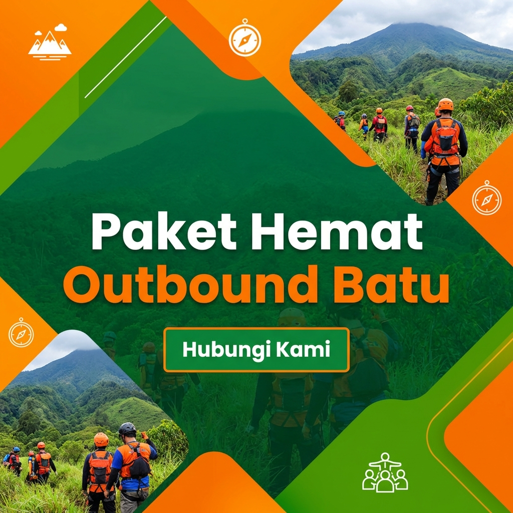
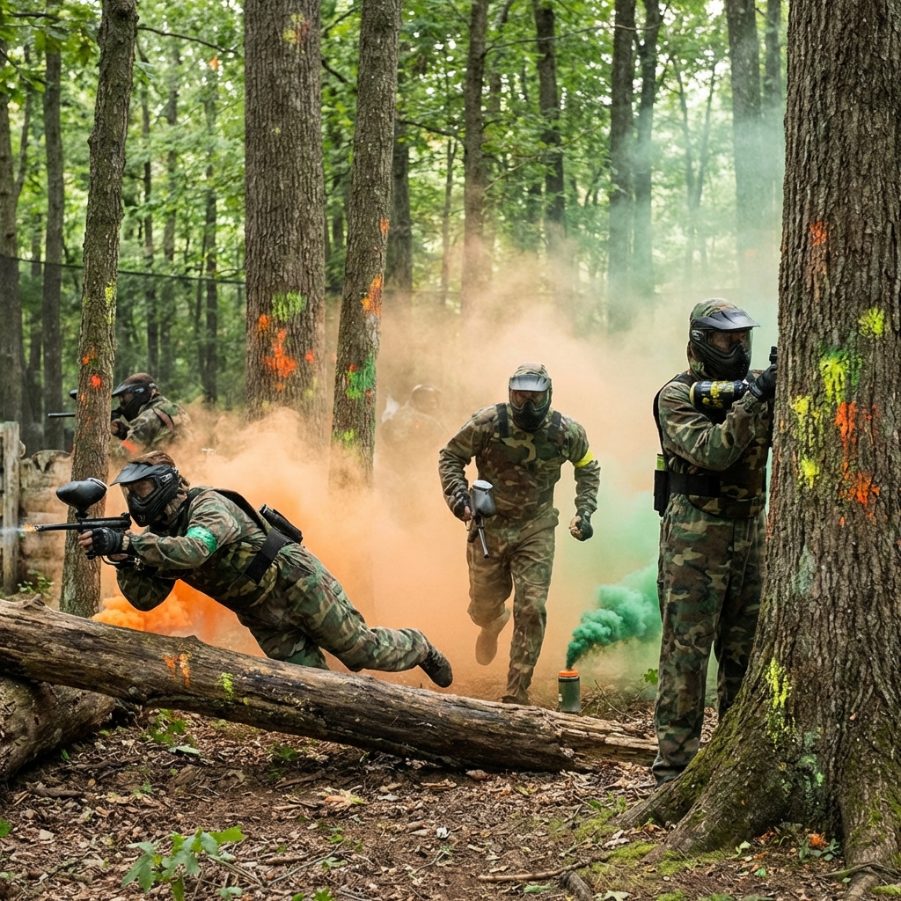

Kegiatan outbound yang seru bisa berubah menjadi bencana jika Anda tidak membawa perlengkapan yang tepat. Terutama di Kota Batu yang cuacanya bisa berubah seketika dari panas terik menjadi hujan deras yang dingin.
Pakaian yang Nyaman dan Menyerap Keringat
Gunakan kaos berbahan quick-dry atau katun yang ringan. Hindari menggunakan baju berbahan jeans karena jika basah akan sangat berat dan menghambat pergerakan Anda selama simulasi permainan.
Baca Juga:
Sepatu Olahraga dengan Grip Bagus
Medan outbound biasanya berupa rumput atau tanah yang mungkin licin. Sepatu olahraga dengan sol karet yang masih bagus sangat disarankan untuk menjaga keseimbangan dan keamanan Anda.

Pakaian Ganti dan Alat Mandi
Banyak kegiatan outbound yang melibatkan air atau lumpur. Pastikan Anda membawa minimal satu set pakaian ganti lengkap beserta handuk kecil dan peralatan mandi pribadi.

Persiapan yang matang adalah kunci kenyamanan selama berpetualang.
Kesimpulan
Pastikan semua barang bawaan Anda masuk dalam satu tas ransel yang praktis. Jangan membawa barang berharga yang berlebihan ke area lapangan.